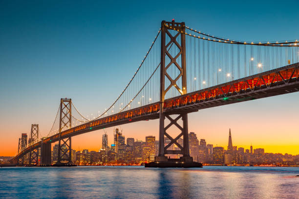

About San Francisco
San Francisco, the jewel of Northern California, is famous for its picturesque landscapes, historic landmarks, and vibrant cultural scene. From the iconic Golden Gate Bridge to the historic streets of the Mission District, San Francisco offers a diverse array of experiences for all who visit.



Top Attractions
- Golden Gate Bridge
- Alcatraz Island
- Fisherman's Wharf
- San Francisco Museum of Modern Art
Facts
- City Population: 802,805
- Incorporated: 1850
- Region: Northern California
- Classification: Urban
- Average Income: $104,552 (State Average: $80,000)